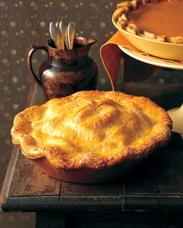

Old-Fashioned Apple-Pie

Description
There's nothing quite like an old-fashioned apple pie. It's a comforting dessert that's just right for the holiday table or a dinner party, and makes any meal special. (Some fans even prefer this apple pie to birthday cake!)
The combination of a buttery pastry crust encasing a filling of Granny Smith apples tossed with butter, sugar, and spices truly can't be beat. As the pie bakes, the kitchen is filled with the cozy smell of apples, cinnamon, nutmeg, and cloves.
Then comes the hard part: waiting for the pie to cool before slicing it. To make this apple pie even sweeter, serve it with a scoop of vanilla ice cream.
Ingredients
- 2 tablespoons all-purpose flour, plus more for dusting
- Pâte Brisée (Pie Dough)
- 12 Granny Smith apples, peeled, cored, and sliced
- ¾ cup sugar, plus additional for pie top
- Zest and juice of 1 lemon
- 1 ½ teaspoons cinnamon
- ½ teaspoon nutmeg
- Pinch ground cloves
- 2 tablespoons unsalted butter
- 1 large egg, beaten
Steps
- Heat oven to 375°F. On a lightly floured surface, roll out pâte brisée into two 1/8-inch-thick circles to a diameter slightly larger than that of an 11-inch plate.
- Press one pastry circle into the pie plate. Place the other circle on waxed paper, and cover with plastic wrap. Chill all pastry until firm, about 30 minutes./li>
- In a large bowl, combine apples, sugar, lemon zest and juice, spices, and flour. Toss well.
- Spoon apples into pie pan. Dot with butter, and cover with remaining pastry circle.
- Cut several steam vents across top. Seal by crimping edges as desired. Brush with beaten egg, and sprinkle with additional sugar.
- Bake until crust is brown and juices are bubbling, about 1 hour.
- Let cool completely on wire rack before serving.